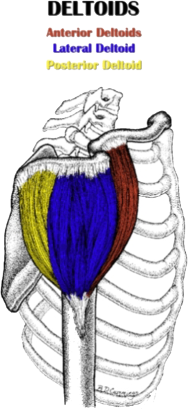

De Deltoids zijn de zichtbare spieren van de hele schouder. Ze bestaan uit 3 delen: Anterior Deltoid, Lateral Deltoid en Posterior Deltoid.
Anterior Deltoid
De Anterior Deltoid ligt vooraan je schouder. Deze raakt de borstspieren. Zijn grootste doel is het opheffen van de arm.
Deze spier kan je trainen door Dumbbell Shoulder Press, Front Raises, Overhead Press, Push Press, ... te doen.
Lateral Deltoid
De Lateral Deltoid ligt aan de buitenkant van je schouder. Wanneer deze spieren goed ontwikkeld zijn, geven deze de indruk van zeer brede schouders.
Het grootste doel is het opheffen van de arm, naar de buitenkant toe. Daarom wordt deze spier vooral actief wanneer je zijwaartse oefeningen doet, zoals Lateral Raises, Dumbbelle Lateral Raises, Upright Row, ...
Posterior Deltoid
Dit deel van de Deltoids ligt aan de achterkant van je schouder. Het doel van deze spieren is om je arm achterwaarts te bewegen of je schoudersbladen naar elkaar toe te trekken.
Dit deel van de schouder wordt getraind door Dumbbell Rear Deltoid Raises, Face Pulls of Bent Over Rows te doen
Rotator Cuff Muscles
Deze spieren zijn niet rechtstreeks zichtbaar. Ze liggen namelijk onder de Deltoids. Ze zijn daarom niet minder belangrijk. Ze zorgen er namelijk voor dat je de schouders en armen kan roteren.